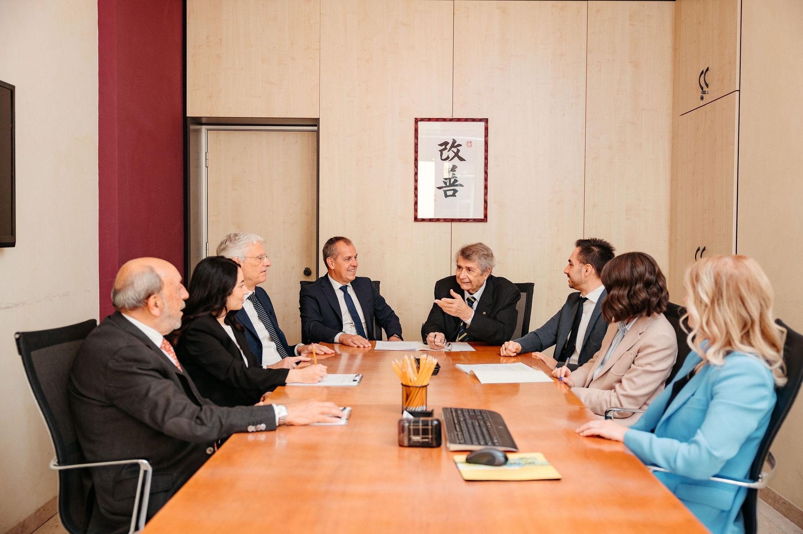
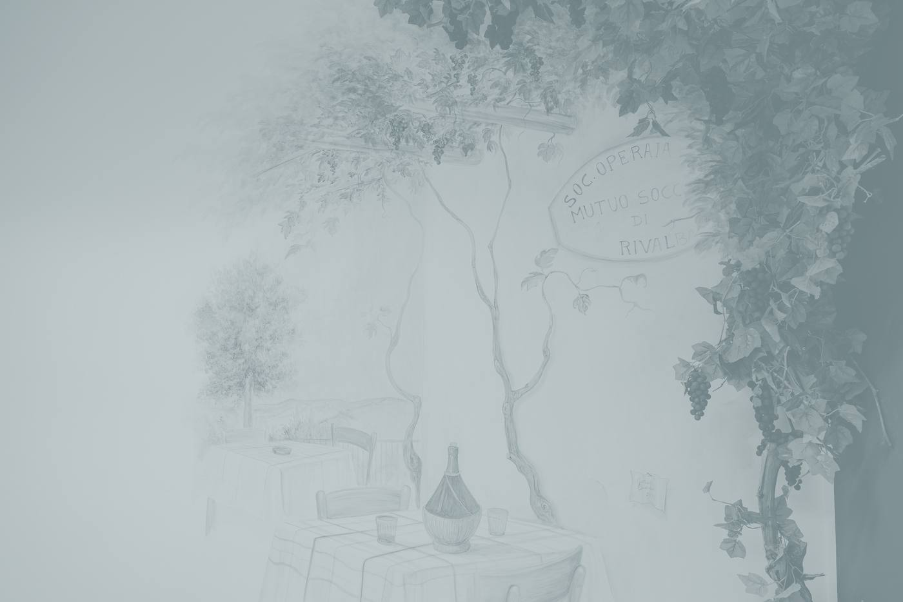
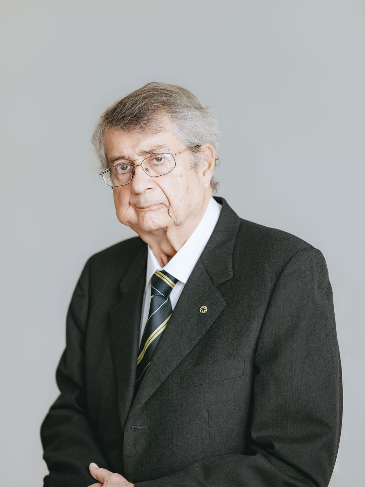
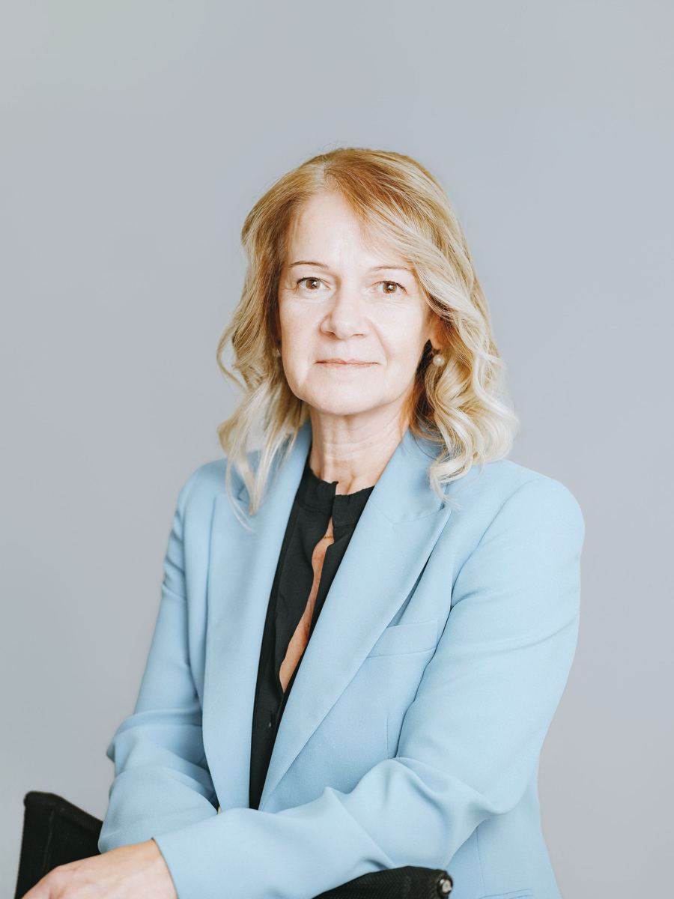

Società tra Professionisti · Torino e Avigliana
Dal 1956 al Vostro servizio per produrre valore.
Commercialisti e Consulenti del Lavoro. Gli adempimenti di ogni mese, e le operazioni particolari che sono necessarie poche volte nella vita di un’impresa.
- Settant’anni di attività
- Torino e Avigliana
- Società tra Professionisti multidisciplinare
Lo Studio, in tre cifre
- 1956L’anno di fondazione dello Studio, a Torino
- 3Studi aggregati fra il 2014 e il 2023
- 11Tra professionisti (8), praticanti (2) e responsabili (1), fra Torino e Avigliana
Di che cosa avete bisogno
Quattro aree di consulenza
Contabilità, fisco, operazioni straordinarie
Commercialisti
Contabilità e adempimenti gestiti per Voi, con scadenze rispettate e nessuna sorpresa.
- Consulenza fiscale nazionale e pianificazione fiscale
- Bilanci d’esercizio, infrannuali e consolidati, Budget e Business Plan
- Contenzioso tributario: assistenza e rappresentanza
- Revisione legale dei conti

Paghe e consulenza sul lavoro
Consulenti del Lavoro
Cedolini e contributi ogni mese; contratti, ispezioni e vertenze quando servono.
- Consulenza giuslavoristica e contrattuale su tutto il ciclo del rapporto
- Procedure disciplinari
- Vertenze sindacali individuali e collettive
- Assistenza in accertamenti e verifiche ispettive
Controllo di gestione, finanza, strategia
Consulenza d’impresa
Gli strumenti che aiutano a prendere le decisioni.
- Sistemi di Controllo di Gestione e reportistica
- Consulenza finanziaria e rapporti con il sistema bancario
- Perizie e valutazioni di stima: patrimoni, immobili, aziende, quote, business model
- Supporto all’internazionalizzazione
Notai, avvocati, ingegneri, medici del lavoro, informatici
La Rete Operativa
Una rete interdisciplinare a disposizione del Cliente, senza aggravio di costi.
- Notai
- Avvocati
- Ingegneri esperti in innovazione
- Medici del Lavoro
Le sedi
Due sedi, gli stessi professionisti
Orario, uguale nelle due sediLunedì–venerdì · 8.45–12.30 · 13.15–17.30
Ai colleghi
Perché crescere? Perché piccolo non è più bello.
Una convivenza sperimentale di diciotto o ventiquattro mesi: spazi, utenze e servizi informatici messi a disposizione. Chi vuole proseguire entra nella STP.
Partnership e aggregazioniLe persone
I Partner dello Studio

Marco SavioDottore Commercialista · Consulente Tecnico del Tribunale Iscritto all’Ordine dei Dottori Commercialisti dal1971 Consulente del Lavoro1969–2012- Federica SavioDottore Commercialista Iscritta all’Ordine dei Dottori Commercialisti dal2014 Italian Certified AdvisorEmirati Arabi Uniti

Valli PegoraroConsulente del Lavoro · Gestore della Crisi Iscritta all’Ordine dei Consulenti del Lavoro dal1996 Iscritta all’Ordine di Torino dal2022
Dalla Bacheca
Quello che scriviamo
- 23 febbraio 2026Articoli
Ma l’Italia è davvero quarta nel medagliere olimpico del 2026?
La classifica si stila in base agli ori. - 28 agosto 2026Curiosità
Grappein e la Casa dell’Orologio di Cogne
Un medico che, duecento anni fa, gestì una miniera. - gennaio 2026Auguri annuali
2026 · Orgoglio italiano
Gli auguri del settantesimo anno.
Parliamone.
Raccontateci come gestite oggi l’amministrazione. Il primo incontro serve a inquadrare la richiesta.